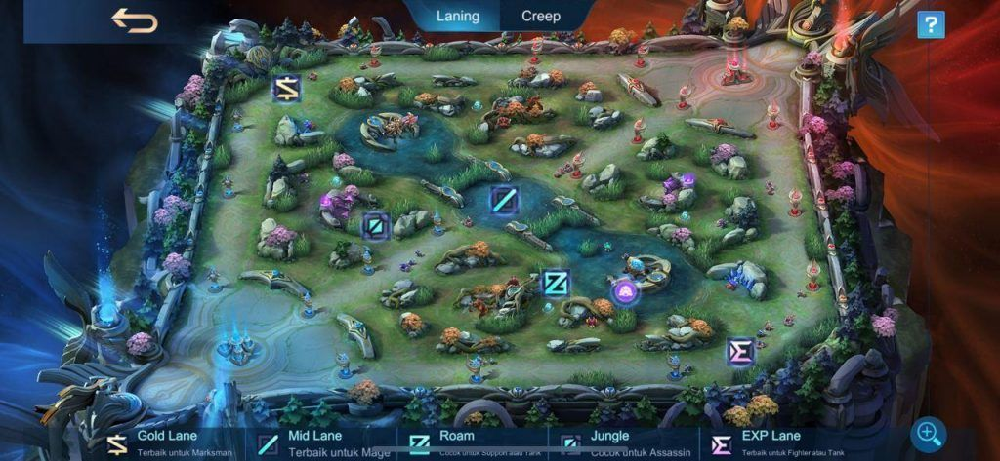
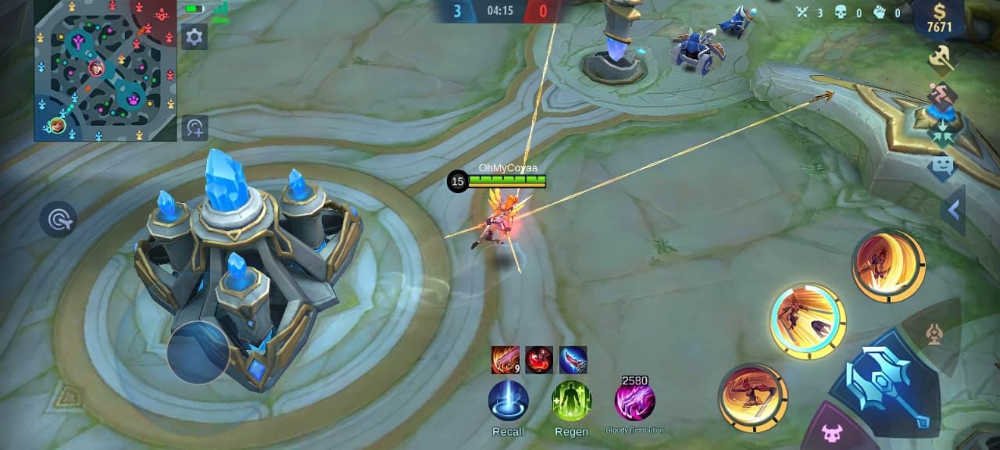
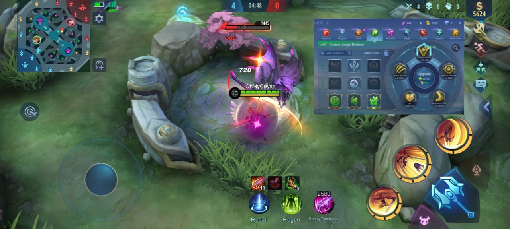
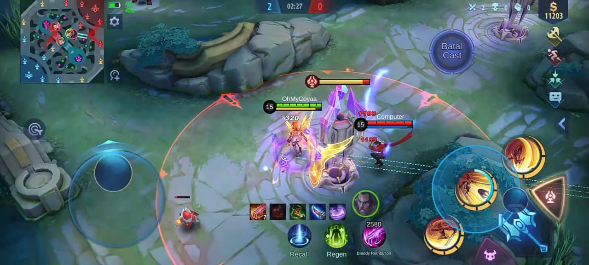
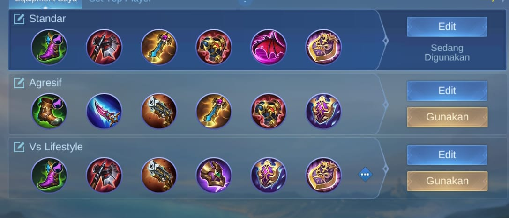

Siapa yang tidak kenal dengan hero satu ini, hero dengan role assasin dan hero yang sangat lincah ini yang mirip seperti karakter anime di Attack On Titan yang bisa mengeluarkan cable dari alat yang ditempelkan di pinggangnya atau disebutnya Manouver Gear.
Benar sekali hero ini adalah Fanny dia sangatlah mematikan dan juga sangatlah lincah namun disisi lain hero ini sangatlah sulit dimainkan untuk pemula, dan sekarang hero ini menjadi sangat popular karna digunakan oleh pro player di tournament bergengsi yaitu di Tournament MPL maupun di MDL.
Seperti yang kalian ketahui memainkan hero Fanny itu butuh perhitungan yang ekstra, jika kamu memainkan hero ini asal-asalan maka yang ada hasilnya akan memperburuk keadaan, jadi kamu jangan khawatir, kali ini mimin akan membagikan tutorial cara menggunakan Fanny dengan baik dan benar untuk pemula agar bisa lebih profesionaal ketika memainkannya agar kamu tidak menjadi beban.
1. Menghafal Sebuah Map dan Temboknya
Yapp sebagai user fanny kamu harus bisa menghafal map secara akurat terutama tembok-tembok bagian sisi mapnya karena itu adalah untuk memanfaatkan cable fannynya untuk digunakan sebagai memburu musuh-musuhmu.
Untuk itu kamu harus menggunakan cable tersebut dengan keahlian kamu dalam mengasah kecepatan jarimu. dan setelah kamu sudah menghafal map tersebut dan juga temboknya.
Kamu juga harus tau posisi Fanny berada di jungler mau pun juga bisa di gold lane exp maupun roam tapi mimin saranin jungler aja yahh jangan aneh aneh dulu setelah kamu sudah paham dengan dua saran mimin tersebut mari kita belajar ke tahap selanjutnya.
2. Mengetahui Arah Steel Cable Ke Tembok
Sebagai pemula kamu bisa mempelajari 1 cable 1 cable saja yaitu dengan cara ke tembok 1 dan ke tembok 2 secara terus menerus setelah menurut kamu bisa dan sudah hafal menggunakan 1 cable kamu bisa mempelajari 2 cable tersebut dengan perlahan.
Bila sudah mahir menggunakan 2 cable tersebut kamu bisa menggunakan teknik selanjutnya yang di sebut freestyle 3 cable biasanya menggunakan 3 cable adalah teknik untuk kamu bisa lebih mahir dan lebih pro.
Tahap yang lebih sulit ialah 4 cable karna ini adalah teknik yang digunakan untuk para pro player Fanny saat membunuh lawannya dengan kesan membunuh dengan gaya setelah kamu sudah mahir 4 cable tersebut pasti kamu akan bisa memainkan hero ini dengan keren dan elegan.
Lantaran dengan skill 2 ini adalah hal yang sangat penting bagi fanny untuk melwan musuh-musuhnya karna skill 2 ini dapat mengeluarkan (Tornado Strike) dari skill 1 sekaligus dan kamu harus mementingkan skill 2 tersebut yang harus dinaikkan levelnya.
3. Lebih Mengutamakan Tehadap Farming
Selain bergantung kepada skillnya, Fanny juga sangat membutuhkan buff terutama yang sangat diprioritaskan saat bermain Fanny ialah mengambil buff ungu terlebih dahulu.
Namun bila kamu dirusuh buff janganlah panik atau khawatir kamu bisa kok meenggunakan emblem jungle yang seperti digunakan dan sangat popular di kalangan pro player seperti RRQ.Albert, Evos.Ferxic, Onic.Sanz, dan juga Aura.Kabuki.
Emblem jungle sangatlah berguna dan berimpact ke gameplay team kalian untuk menguasai area jungle musuh lantaran dengan fungsinya emblem jungle ini bisa membuat kamu cepat naik levelnya dalam sekejap dan kamu juga jangan khawatir bila disuruh lawan retri dengan player yang tidak menggunakan emblem jungle karna kelebihan emblem jungle ini juga menambahkan damage retri kamu ke monster sebesar 21%.
4. Gunakan Combo Skill Fanny
Setelah kamu sudah mempelajari caranya agar bisa mempertahankan buff ungu. Kali ini kita akan mempelajari combo skill di hero Fanny, siapa yang tidak tau dengan combo skill combo skill sangatlah wajib untuk kamu ingin menggunakan hero-hero lainnya.
Maka dari itu combo skill Fanny ialah dengan menggunakan skill 2-3-1-2, karna kelemahan Fanny ialah bila dia tidak ada buff ungu, jik Fanny tidak ada buff ungu maka skill 2nya akan memperboroskan energinya, jadi kamu harus usahakan mengenai musuhmu ketika menggunakan skill 2 agar energinya bertambah dan biar tidak boros ketika kamu tidak menggunakan buff ungu tersebut.
Apabila kamu terdesak dan tidak bisa terbang makan jangan gunakan ultimu disaat yg seperti itu, karena itu akan sia-sia, maka dari itu usahakan kamu menggunakan ulti disaat kamu sedang terbang agar damage dari ulti Fanny lebih besar.
Jika musuhmu masih belum bisa terbunuh maka gunakanlah skill 1 setelah ulti karna skill 1 ketika ulti adalah pilihan yang tepat sebab ulti Fanny langsung lock ke depan si targetnya dan kamu bisa langsung menggunakan skill 1 setelah itu.
Ketika musuhmu masih belum terbunuh dan masih bisa sempat kabur maka kamu kejarlah dengan menggunakan skill 2 punyamu itu karna menggunakan skill 2 Fanny ketika mengejar target ketika melarikan diri adalah suatu hal yang bagus karena skill 2 fanny lebih cepat dibandingkan hero lain ketika berlari.
5. Item/Build Terkuat Fanny
Setiap hero pasti mempunyai item/build powernya masing masing karena itu Fanny juga mempunyai build/itemn powernya juga yaitu: Yang pertama dan yang paling utama adalah build sepatu dan retribution ungu karna dengan item dan retri ungu tersebut kamu bisa membakar lawanmu ketika kamu menggunakan retri ketika sudah stack 5, baiklah mimin akan membagikan 3 item/build ini kepada kamu nih, yang pertama itu standar aja sih karna itu ga terlalu agresif juga tapi bisa memberikan dampak besar sih buat hero hero phsycal.
Dan yang terakhir yaitu yang ke 3, item ini sangatlah keren karena dengan kamu menggunakan item ini kamu jadi lebih berani jika melawan hero hero yang darahnya nambah sendiri karena build ini mengcounter hero yang lifestealnya yang lumayan deres seperti: YouZhong, Alucard, Alice, dan hero yang menggunakan item lifesteal yang popular seperti endles battle, haas's claws, dan concentrated energy(Magic).